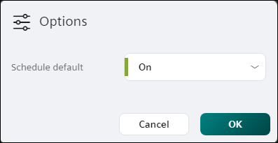

修改计划默认值
时间表默认值是发生以下任一情况时时间表控制引用对象的值：
- A switching point is not in control. This would happen on any day during the period of time before the first switching point is scheduled to occur.
- A switching points value is set to Return to default.
Modifying the Schedule default
使用此过程可以修改添加到计划中的切换点的默认值或设置。
- While in Edit mode, click Options in the heading.
- The Options dialog box displays the current Schedule default.

- Click the drop-down list to enter a new default value (analog object) or select a new default setting (binary or multistate object).
- If the schedule should not attempt to control the referenced object(s) when a switching point is not in control or when a switching point’s value is set to Return to default, select the Return to default checkbox (analog object) or the Return to default setting (binary and multistate object).
- Click OK to save your changes.